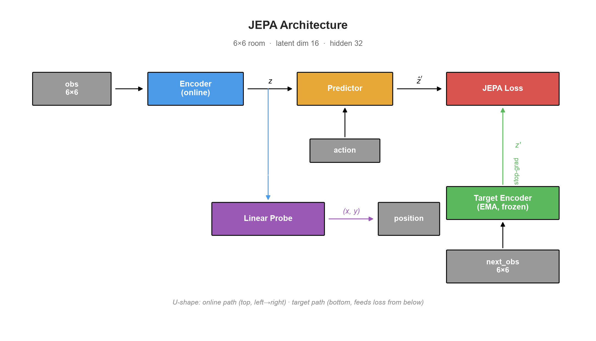
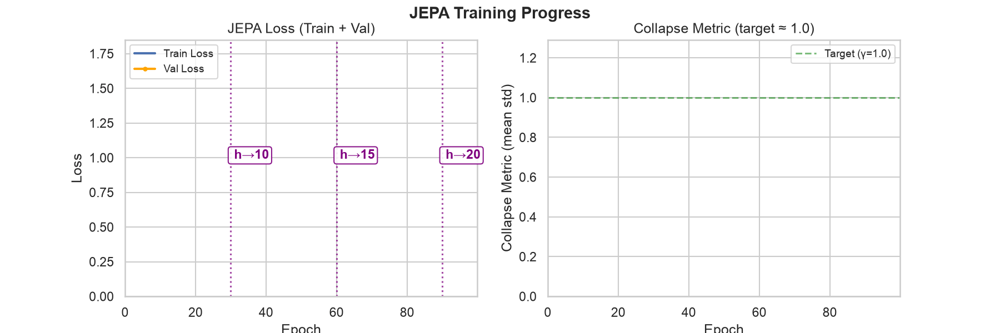
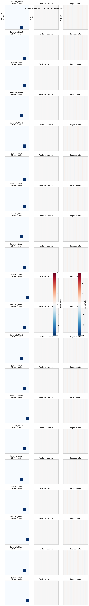
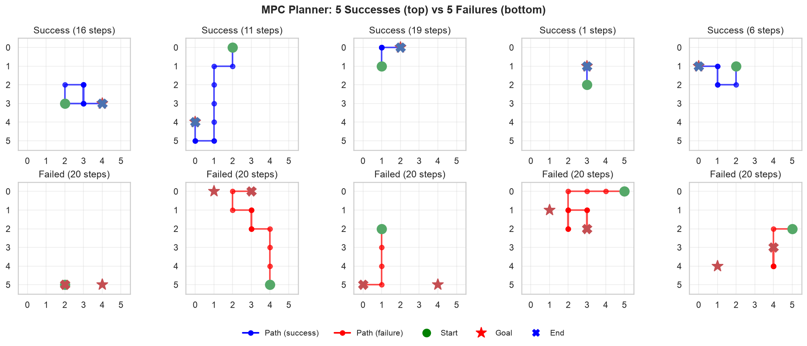
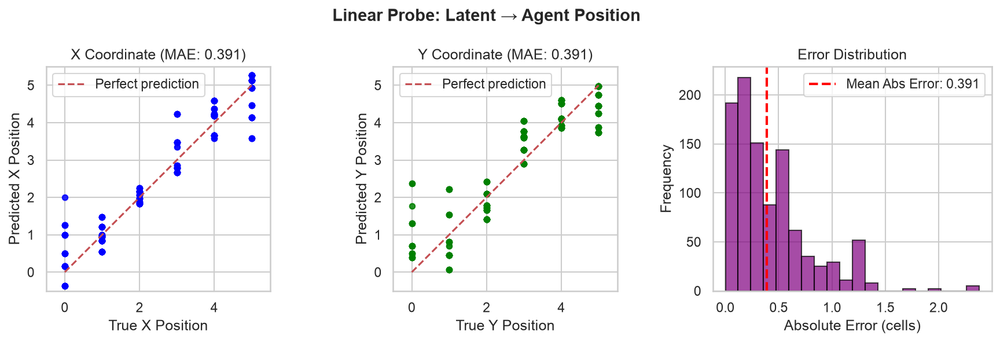

Action-conditional Joint Embedding Predictive Architecture with VICReg regularization. Pure PyTorch, from scratch.
This implementation builds a complete JEPA (Joint Embedding Predictive Architecture) world model for a 2D grid environment. The model learns to predict future latent states conditioned on actions, using VICReg regularization to prevent representation collapse. Acting is performed by random-shooting Model Predictive Control (MPC) in the learned latent space — no policy network, no decoder, no pixel reconstruction.
The JEPA consists of an online encoder, an EMA target encoder, an action-conditioned predictor, and a VICReg-regularized JEPA loss.
Observation → Encoder → Latent z. Action → Embed → Concat with z → Predictor → Predicted z'. Next observation → Target Encoder (EMA) → Target z'. JEPA Loss = MSE(pred, target) + Variance(z) + Covariance(z).

Animated training curves showing JEPA loss decreasing and collapse metric (mean latent std) rising from near-zero to the target of 1.0, indicating successful VICReg regularization.
Left: JEPA loss over epochs. Right: Collapse metric (mean std of latent dimensions) — target is γ=1.0 (green dashed line). An untrained encoder collapses (std ≈ 0), making prediction trivial but useless.

Three-panel comparison for horizon=5: Ground truth observations (left), predicted latent embeddings (center), and target encoder embeddings of actual next observations (right). The predictor learns to forecast latent dynamics that align with the EMA target.
Each row shows one sample rolled out for 5 steps. Left column: 8×8 ground truth grid (agent position). Center: Predicted 32-dim latent (heatmap). Right: Target 32-dim latent from EMA encoder. Close alignment indicates accurate latent dynamics.

Random-shooting MPC plans in latent space: sample 64 action sequences, roll out each with the predictor, score by distance to goal embedding, execute first action of best sequence. Green = success, Red = failure.
10 episodes in an 8×8 room. Start (green circle), Goal (red star), End (blue X = success, red X = failure). The planner achieves ~90% success rate vs 40% for random policy.

A linear probe trained on frozen encoder outputs recovers the agent's (x, y) position from the 32-dim latent. Low MAE confirms the encoder captures true state information without a decoder.
Left: Predicted vs true X position. Center: Predicted vs true Y position. Right: Absolute error distribution. Diagonal = perfect prediction. MAE ≈ 0.3 cells in a 6×6 room.

Key functions (import from JEPA package):
env.py — 2D room environmentdata.py — Transition collectionencoder.py — Encoder + EMA targetpredictor.py — Action-conditioned dynamicslosses.py — VICReg + JEPA lossestraining.py — Training loopevaluation.py — Rollouts, probesplanning.py — MPC planningexperiment.py — Full pipelineanalysis.py — All visualizationsscaffold.py — End-to-end demotest_visualizations.py — Generate plotsimages/ — Generated outputs